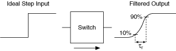

给定一个理想的阶跃输入，上升时间是输出信号电压从阶跃幅度的 10% 上升到 90% 所需的时间。上升时间与使用以下近似值的带宽有关：
τ r = 0.35/带宽 (Hz)
下图说明了上升时间。

提交有关此主题的反馈。 访问ni.com/support以获得技术支持。
 提交有关此主题的反馈。
提交有关此主题的反馈。 访问ni.com/support以获得技术支持。 提交有关此主题的反馈。 访问ni.com/support以获得技术支持。
访问ni.com/support以获得技术支持。 提交有关此主题的反馈。 访问ni.com/support以获得技术支持。